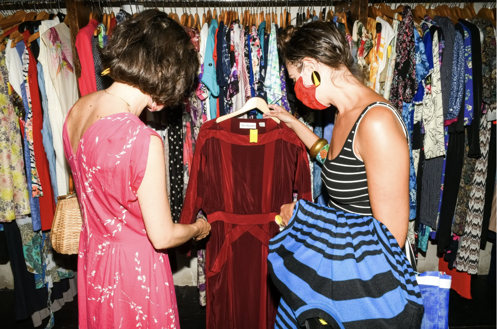
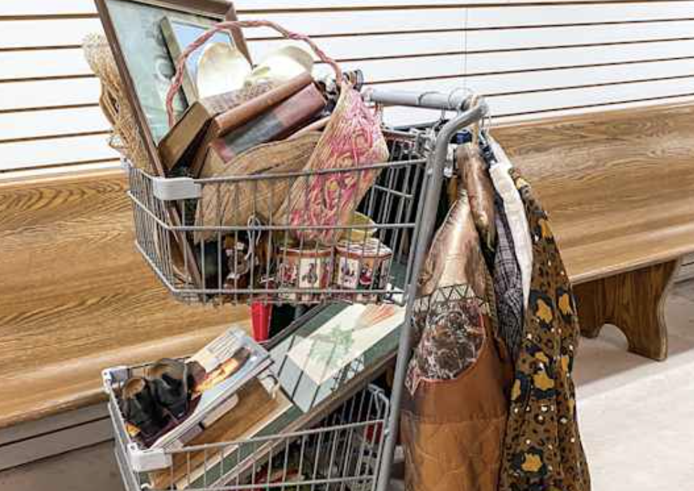

One of the biggest reasons people thrift is to save money, and while name brands are increasing their prices every year, thrifting prices will still be drastically lower than buying name brands.
According to USAToday 85% of thrifters said they did so to save money in 2022, but this year, 88% of thrifters still said they were motivated by savings. This shows how many people go thrift shopping just to save money, not even counting their influence on others, and the style of clothing they are looking for.

USAToday also stated that after a survey of 1,000 thrifters, $2,071 was saved in 2024, compared to $1,760 in 2022. If you want to start thrifting because of money, it would be beneficial, seeing how much people can save just by not buying brand-name items that they could find at the thrift store for way cheaper.